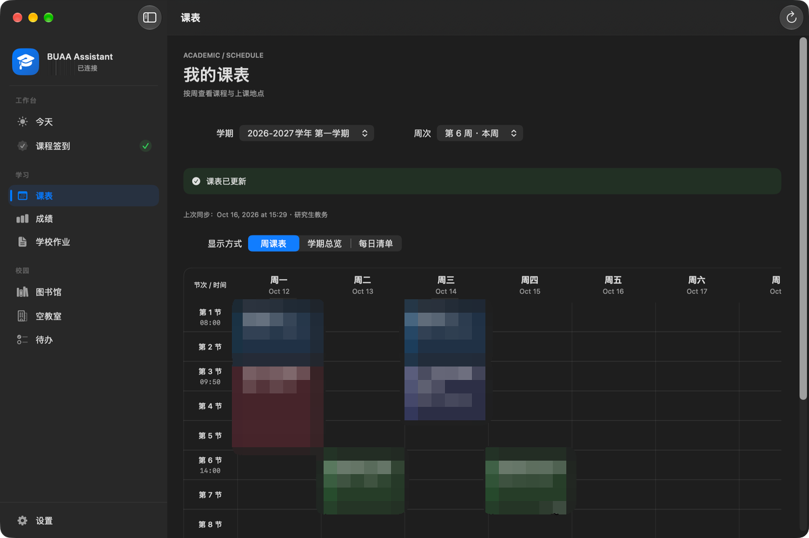
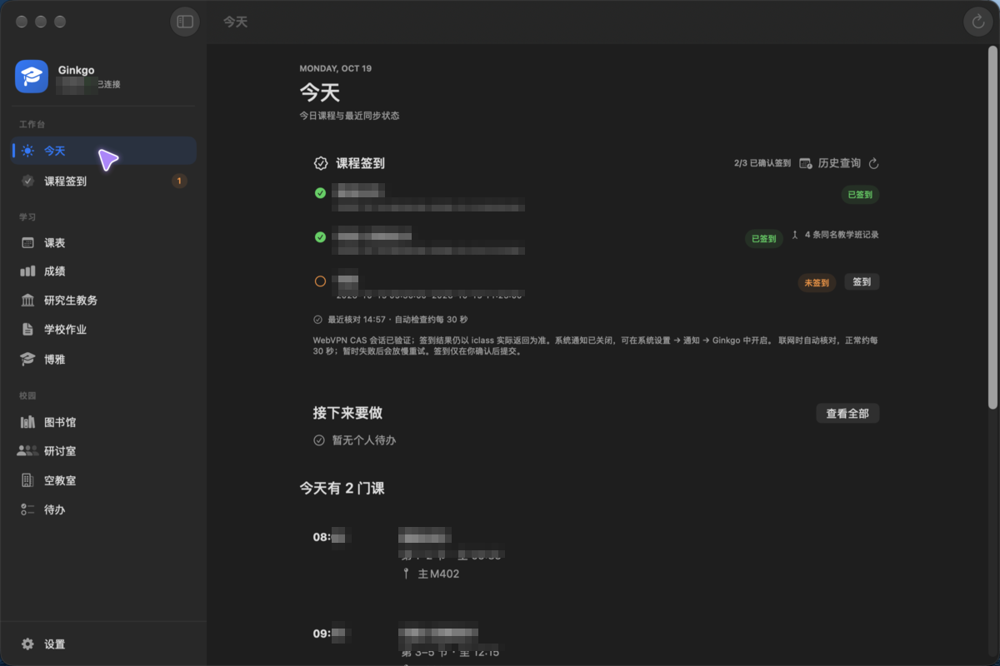
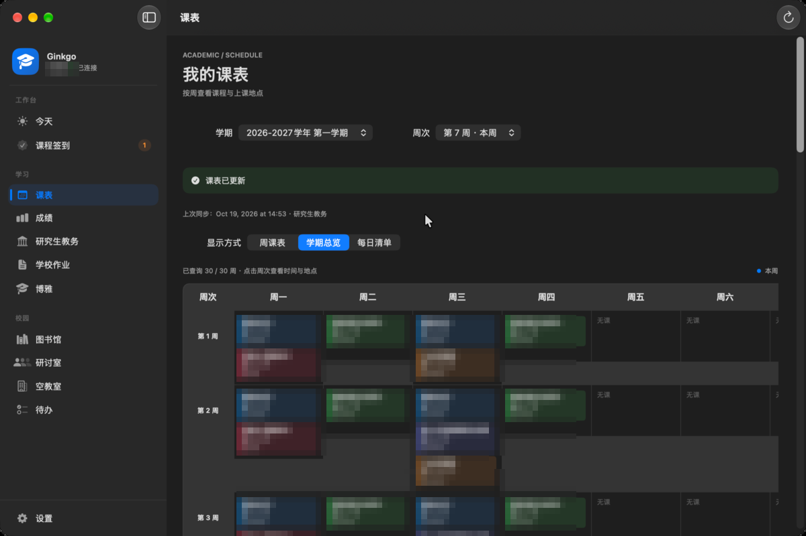
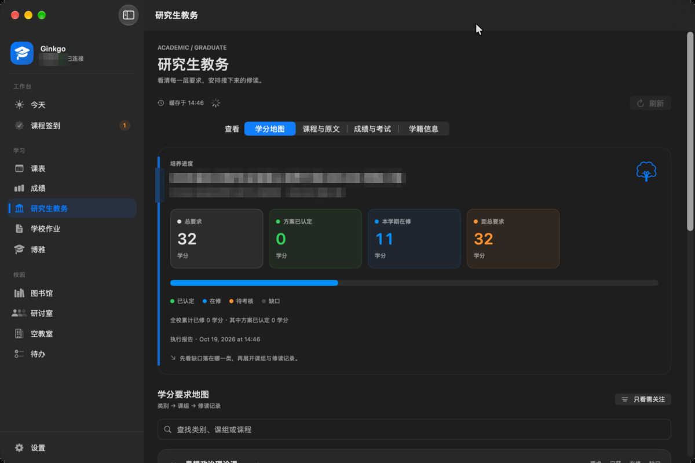

出门前，看看今天
课程、签到状态、作业摘要与个人待办集中查看。先安排今天，再进入需要的服务。
- 今日课程与上课地点
- 学校作业与本机待办
- macOS 菜单栏随时查看
下一节课在哪，作业何时截止，自习去哪里。
把课表、作业和校园服务，收进一个日常工作台。

围绕一天的节奏组织信息，
打开就知道接下来要关注什么。
以上展示产品整体能力。各平台的功能与验证范围不同，下载前请查看平台说明。
以下为 macOS 深色模式开发截图，个人信息已打码。
点击图片可放大；其他平台仍在持续对齐体验。

macOS 的侧栏与菜单栏，iPhone 的底部导航，iPad 的双栏工作台。保留各自熟悉的操作方式，让校园服务始终容易找到。
Android 与 Windows 正在沿着同一套日常任务继续生长，逐步补齐功能与交互。
查看平台与进展

一个项目，几种熟悉的打开方式。
每个平台的当前状态，都在这里说明。
原生侧栏工作台与菜单栏常驻，提供当前最完整的校园服务体验。
手机直接安装。课表、作业、博雅与校园服务，收进熟悉的移动工作台。
原生移动工作台，复用 macOS 的校园服务。目前需使用 Mac 与 Xcode 构建安装。
查看构建说明与 Android 共建跨平台工作台，功能与桌面交互持续完善中，仍待 Windows 实机验收。
查看开发进展这里列出已发布安装包与源码入口。Android Alpha.3 尚未与 macOS 功能完全对齐。签到与图书馆操作已接入逐次确认，真实写入仍待验收；博雅选退课与研讨室写操作尚未开放。Windows 尚无可下载发行版。各平台的预约与签到请逐项核对并确认，数据请以学校官方渠道为准。
Android 安装与已知限制 ↗Ginkgo 是非官方个人开源项目，与北京航空航天大学及其任何部门无隶属、合作或授权关系。校园信息请以学校官方渠道为准。
不需要 Ginkgo 账号。使用本人的北航统一身份认证账号登录；学校系统的网络策略、验证码或维护状态可能影响服务。Android 也可先进入离线演示了解界面。
当前各平台有差异。macOS 提供最完整的工作台，iOS 使用原生界面并复用校园服务。Android 提供 Alpha 体验，Windows 开发中。详细范围以各平台发布说明和开发记录为准。
macOS 可从发布页选择 DMG 或 ZIP；Android 请确认设备为 arm64、系统为 Android 7.0 或更高，按系统提示允许安装 APK。曾安装调试版的设备可能需要先卸载旧版，卸载会清除本机数据。请先阅读Android 安装说明，反馈时不要附上密码、Cookie 或个人信息。
Ginkgo 仅供个人学习与自用，使用者应遵守学校相关服务条款与网络使用规定，不用于绕过风控或替代官方服务。软件依 MIT 许可按原样提供，作者不对数据准确性、服务可用性或由此产生的损失负责。请自行核对重要信息，并承担使用风险。